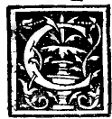

CAPITOLO IX¶
Dele colonne laterate.

Con succinto discorso a vostra bastanza hauendo dicto dele colonne rotonde me parso condecente ancora dele laterate alcuna cosa dire acio paia la loro fabrica fra laltre non essere inutile, conciosia che grandissima venusta oltra el sustegno del peso neu hedificii rendine neliaspecto, Dele quali in vero non diro altro senon quello che dele tonde finora habiam detto confidandome nelli vostri peregrini ingegni, e con quella parte, maxime a ogni operante necessaria qual da me hauete con diligentia intesa, cioè de numeri e misure con la pratica de loro proportioni: con lequali mi rendo certissimo che sempre le saperete proportionare con li vostri acomodati strumenti circino e libella cioè mediante la linea recta e curua. con le quali comme sopra fo detto ogni operatione a degno fine se conduce.
Comme in le letere antiche in questo nostro volume preposte aperto se vede; qual sempre con tondi e quadri sonno facte quando mai non fosse penna ne penello. E benché se dica esser difficile el tondo al quadro proportionare: con scientia de quadratura circuii secondo tutti li philosophi sit scibilis et dabihs. quamuis nonduum sit scita ncque data. Forse in questo di e nato chi la darà, comme a me a ogni vno che la negasse me otfero palpabiliter mostrarla.
Adonca altro non pico se non quello che circa loro denanze in questo fra li corpi regulari e dependenti ho detto. Pero a quel luogo ve remeto e aperto trouarete.